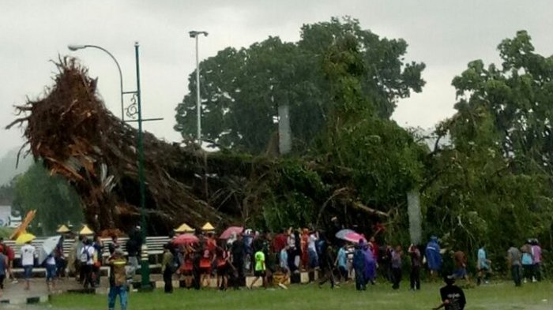

Angin Ribut Banjarnegara
Nov 10, 2017views : 9,999,944Ada korban jiwa tertimpa pohon tumbang akibat angin ribut di Banjarnegara mengusik Gubernur Jawa Tengah Ganjar Pranowo. Bencana angin yang terjadi mengakibatkan korban meninggal dunia dan luka-luka. Ganjar mengaku sedih dan langkah ke depan agar hal sama tak terulang, ia sudah sudah berkomunikasi dengan Badan Penanggulangan Bencana Daerah (BPBD), serta mendapatkan laporan dari masyarakat melalui media sosial. “Saya turut berduka atas korban meninggal dunia. Semoga khusnul khotimah. Kepada mereka yang sakit segera mendapatkan perawatan dan semoga lekas sembuh," kata Ganjar saat dihubungi melalui pesan singkat WhatsApp, Rabu (8/11/2017).
Watch This